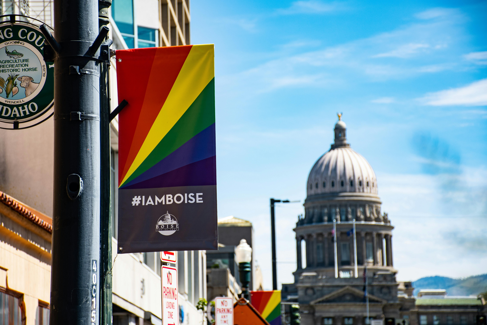

Lucretia is a passionate woman with a love for humans and efficient communication, despite differences. Always eager to learn new technologies and solve challenging problems. With a major in Anthropology, Lucretia has the ability to see different perepectives, find answers for herself, and question what is considered normal.
